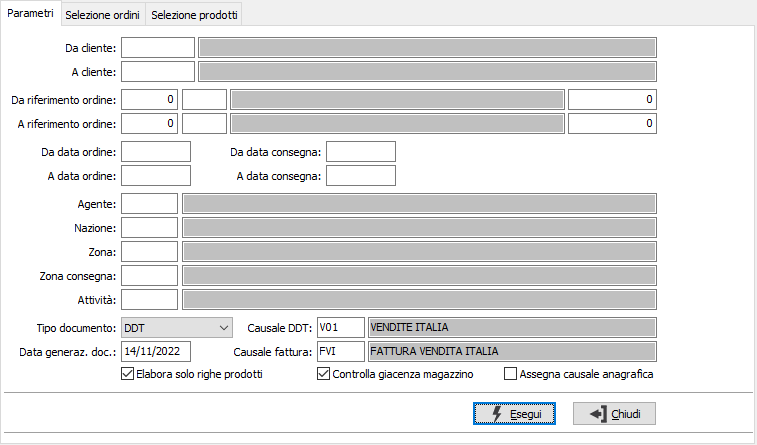
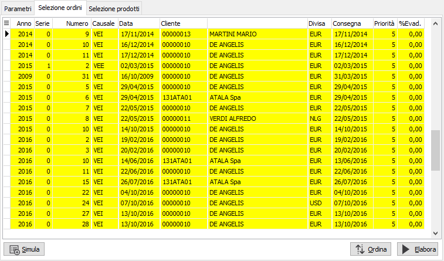
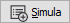
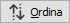
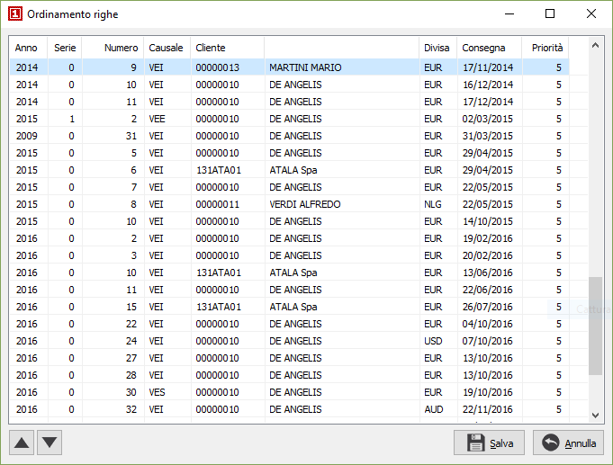
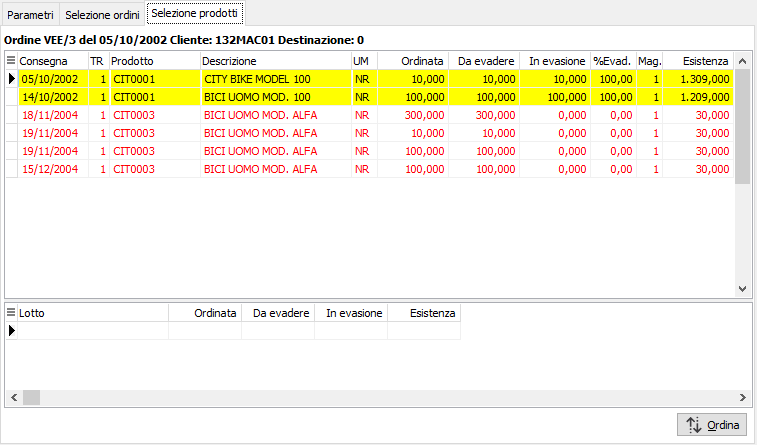
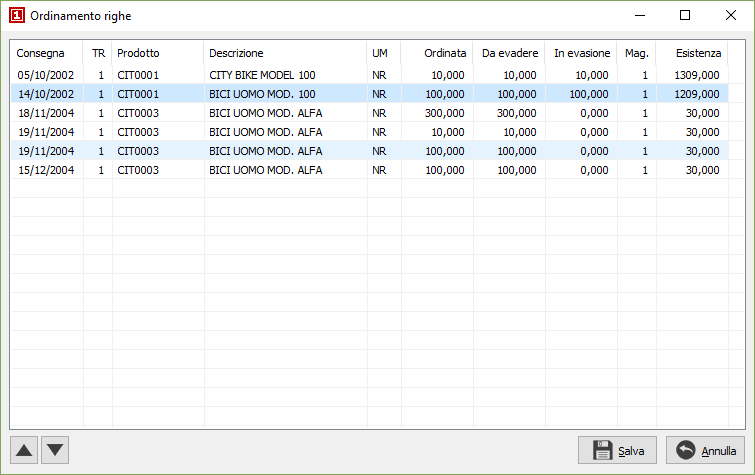

Generazione documenti spedizione
Il programma effettua la generazione di DDT o Fatture direttamente evadendo
in maniera automatica, in relazione alle giacenze di magazzino, gli ordini
clienti. La fase di evasione può essere diretta dall'utente ordinando
gli ordini selezionati a piacimento o stabilendo a priori, sull'ordine,
la priorità di evasione; tramite le preferenze dell'anagrafica
clienti è possibile indicare il tipo di documento preferenziale da
generare, l'eventuale criterio di raggruppamento e la possibilità di effettuare
evasioni parziali di ordine; quest'ultima opzione in modo particolare
può avere importanza in fase di evasione ordine perchè la procedura ignorerà,
in caso di impossibilità all'evasione parziale, le righe ordini per cui
la giacenza non sarà completamente sufficiente a coprire la quantità ordinata.
Il programma si articola su tre finestre video. La prima, Parametri,
consente la definizione dei parametri di selezione degli ordini da evadere.

DA CLIENTE: codice
del cliente, presente in anagrafica clienti, da cui si vuole iniziare
la selezione di analisi. Confermando a vuoto, la selezione inizia dal
primo cliente valido. Sul campo sono attive le funzioni di ricerca (F9).
A CLIENTE: codice
del cliente, presente in anagrafica clienti, con cui si vuole terminare
la selezione di analisi. Confermando a vuoto, la selezione termina con
l’ultimo cliente valido. Sul campo sono attive le funzioni di ricerca
(F9).
DA RIFERIMENTO ORDINE:
tre campi per contenere rispettivamente anno, causale e numero dell'ordine
da cui si vuole iniziare la selezione. Confermando a vuoto, la selezione
inizia dal primo ordine compatibile con gli altri parametri.
A RIFERIMENTO ORDINE:
tre campi per contenere rispettivamente anno, causale e numero dell'ordine
con cui si vuole concludere la selezione. Confermando a vuoto, la selezione
termina con l’ultimo ordine compatibile con gli altri parametri.
DA DATA ORDINE: data
dell'ordine da cui deve iniziare l’analisi degli ordini. Confermando a
vuoto, l’analisi inizia con il primo ordine valido.
A DATA ORDINE: data
dell'ordine con cui si desidera terminare l’analisi degli ordini. Confermando
a vuoto, l’analisi si conclude con l'ultimo ordine valido.
DA DATA CONSEGNA:
data di consegna da cui deve iniziare l’analisi degli ordini. Confermando
a vuoto, l’analisi inizia con il primo ordine valido.
A DATA CONSEGNA: data
di consegna con cui terminare l’analisi degli ordini. Confermando a vuoto,
l’analisi si conclude con l'ultimo ordine valido.
AGENTE: codice dell'agente
per cui si vuole effettuare l'analisi degli ordini. Sul campo sono attive
le funzioni di ricerca (F9).
NAZIONE: codice della
nazione per cui si vuole effettuare l'analisi degli ordini. Sul campo
sono attive le funzioni di ricerca (F9).
ZONA: codice della
zona per cui si vuole effettuare l'analisi degli ordini. Sul campo sono
attive le funzioni di ricerca (F9).
ZONA CONSEGNA: codice
della zona di consegna per cui si vuole effettuare l'analisi degli ordini.
Sul campo sono attive le funzioni di ricerca (F9).
ATTIVITÀ: codice dell'attività
per cui si vuole effettuare l'analisi degli ordini. Sul campo sono attive
le funzioni di ricerca (F9).
TIPO DOCUMENTO: definisce
il tipo documento da generare: DDT oppure fattura.
DATA GENERAZ. DOC.:
indicare la data che si vuole assegnare ai documenti generati.
CAUSALE DDT: causale
di DDT da utilizzare per la generazione dei documenti. Il campo è obbligatorio.
CAUSALE FATTURA: causale
di fatturazione da utilizzare per la generazione dei documenti. Il campo
è obbligatorio.
ELABORA SOLO RIGHE
PRODOTTI: definisce se devono essere considerate solo le righe ordini
che contengono un codice prodotto (casella con segno di spunta) oppure
tutte (casella vuota).
CONTROLLO GIACENZA
MAGAZZINO: definisce se devono essere abilitate all'evasione solo le righe
per cui il prodotto abbia una giacenza tale da coprire l'ordine (casella
con segno di spunta) oppure non considerare la giacenza (casella vuota).
Assegna
causale anagrafica: Se la casella è spuntata, al documento verrà
assegnata la causale del cliente (se presente) definita nella linguetta
preferenze. La casella è visibile se in configurazione del modulo Vendite
non è attiva l'opzione "Contabilizzazione diretta".
Confermando tramite pressione del bottone Esegui, viene avviata la selezione
e richiamata la finestra video Selezione Ordini, con le teste ordini già
selezionate.

Gli ordini vengono presentati in ordine di Priorità e data consegna
dal meno recente al più recente. E' possibile selezionare o deselezionare
gli ordini con il doppio clic del mouse, il menù corrispondente al tasto
destro del mouse oppure il tasto F12 o CTRL+F12 per la selezione di tutti
gli ordini.

Il pulsante Simula consente la simulazione dell'elaborazione
degli ordini selezionati e valorizza la relativa colonna percentuale di
evadibilità, consentendo all'utente di decidere se cambiare l'ordinamento
dei documenti per modificare i dati di generazione.

Il pulsante Ordina consente l'accesso alla finestra
di ordinamento dalla quale è possibile spostare a piacimento gli ordini
in modo da modificare l'ordine di evasione.

Il pulsante Elabora consente l'avvio dell'elaborazione
delle righe degli ordini selezionati per la determinazione delle quantità
da spedire in relazione alle giacenze di magazzino. la finestra video
Selezione prodotti compare con i prodotti già selezionati.

Le righe ordine vengono presentati in relazione alla selezione ordini
precedente e selezionate quando la giacenza è sufficiente; vengono visualizzate
le quantità ordinate, da evadere, in evasione e la giacenza già detratta
della quantità utilizzata per l'evasione (in evasione), viene inoltre
visualizzata la percentuale di evadibilità calcolata rapportando la quantità
da evadere e la quantità in evasione. Le righe in rosso non sono selezionabili
perchè con giacenza insufficiente; tuttavia annullando la selezione a
righe precedenti, dello stesso prodotto, potrebbero diventare disponibili.
E' possibile selezionare o deselezionare le righe con il doppio clic
del mouse, il menù corrispondente al tasto destro del mouse oppure il
tasto F11 o CTRL+F11 per la selezione di tutte le righe selezionabili.
Il pulsante Ordina consente l'accesso alla finestra
di ordinamento dalla quale è possibile spostare a piacimento le righe
in modo da modificare l'ordine di evasione, la selezione dei prodotti
sarà azzerata e nuovamente effettuata in base al nuovo ordinamento.


|
L’assegnazione
delle matricole in fase di generazione documenti spedizione deve
essere effettuata al termine dell’elaborazione; prima del salvataggio
viene aperta la finestra di assegnazione
massiva matricole per completare l’assegnazione; la stessa
funzionalità è disponibile prima del salvataggio tramite l’utilizzo
del pulsante Matricole. Se non vengono assegnate tutte le matricole
viene dato comunque un avviso e viene richiesto se proseguire
col salvataggio, in caso affermativo sarà eventualmente possibile
completare successivamente l’assegnazione delle matricole
tramite la variazione dei singoli documenti oppure con la procedura
Assegnazione matricole. |
Al termine delle operazioni, quando viene premuto il tasto F10 oppure
il pulsante Salva nella tool bar compare la finestra di conferma della
generazione dei documenti. Al termine della registrazione, viene richiesto
se si deve effettuare la stampa diretta dei documenti generati.